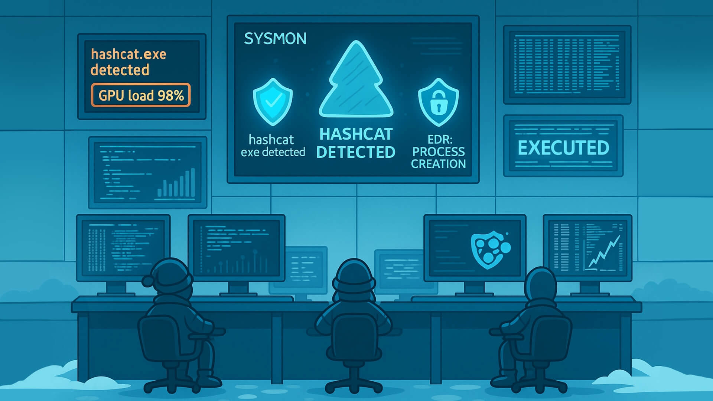

Attackers don't usually try to "break" the encryption itself because that would take far too long with modern cryptography. Instead, they focus on guessing the password that protects the file. The two most common ways of doing this are dictionary attacks and brute-force (or mask) attacks.
Dictionary Attacks
In a dictionary attack, the attacker uses a predefined list of potential passwords, known as a wordlist, and tests each one until the correct password is found. These wordlists often contain leaked passwords from previous breaches, common substitutions like password123, predictable combinations of names and dates, and other patterns that people frequently use. Because many users choose weak or common passwords, dictionary attacks are usually fast and highly effective.
Mask Attacks
Brute-force and mask attacks go one step further. A brute-force attack systematically tries every possible combination of characters until it finds the right one. While this guarantees success eventually, the time it takes grows exponentially with the length and complexity of the password.
Mask attacks aim to reduce that time by limiting guesses to a specific format. For example, trying all combinations of three lowercase letters followed by two digits.
By narrowing the search space, mask attacks strike a balance between speed and thoroughness, especially when the attacker has some idea of how the password might be structured.
Practical tips attackers use (and defenders should know about):
rockyou.txt, common-passwords.txt.?l?l?l?d?d = three lowercase letters + two digits, which is used as a password mask format by password cracking tools).You will find the files for this section in the Desktop directory of the machine. Switch to it by running cd Desktop in your terminal.
Use the file command or open the file with a hex viewer. This helps pick the right tool.
File Command
ubuntu@tryhackme:~/Desktop$ file flag.pdf
ubuntu@tryhackme:~/Desktop$ file flag.zip
If it's a PDF, proceed with PDF tools. If it's a ZIP, proceed with ZIP tools.
pdfcrack, john (via pdf2john)fcrackzip, john (via zip2john)john (very flexible) and hashcat (GPU acceleration, more advanced)Example: PDF with pdfcrack and rockyou.txt:
PdfCrack Command
ubuntu@tryhackme:~/Desktop$ pdfcrack -f flag.pdf -w /usr/share/wordlists/rockyou.txt
PDF version 1.7
Security Handler: Standard
V: 2
R: 3
P: -1060
Length: 128
Encrypted Metadata: True
FileID: 3792b9a3671ef54bbfef57c6fe61ce5d
U: c46529c06b0ee2bab7338e9448d37c3200000000000000000000000000000000
O: 95d0ad7c11b1e7b3804b18a082dda96b4670584d0044ded849950243a8a367ff
Average Speed: 29538.5 w/s. Current Word: 's8t8a8r8'
Average Speed: 31068.0 w/s. Current Word: 'toby344'
Average Speed: 30443.7 w/s. Current Word: 'erikowa'
Average Speed: 29519.3 w/s. Current Word: '0848845800'
Average Speed: 29676.4 w/s. Current Word: 'u3904041'
Average Speed: 29339.8 w/s. Current Word: 'spider0187'
Average Speed: 30156.8 w/s. Current Word: 'roermond7'
Average Speed: 30364.8 w/s. Current Word: 'papaopass2'
found user-password: 'XXXXXXXXXX'
Example: using john
zip2john flag.zip > ziphash.txtTerminal
ubuntu@tryhackme:~/Desktop$ zip2john flag.zip > ziphash.txt
Terminal
ubuntu@tryhackme:~/Desktop$ john --wordlist=/usr/share/wordlists/rockyou.txt ziphash.txt
Using default input encoding: UTF-8
Loaded 1 password hash (ZIP, WinZip [PBKDF2-SHA1 128/128 AVX 4x])
Cost 1 (HMAC size) is 29 for all loaded hashes
Will run 2 OpenMP threads
Press 'q' or Ctrl-C to abort, almost any other key for status
XXXXXXXXXXX (flag.zip/flag.txt)
1g 0:00:02:12 DONE (2025-10-03 08:26) 0.007552g/s 20696p/s 20696c/s 20696C/s winternights..wine23
Use the "--show" option to display all of the cracked passwords reliably
Session completed.
Offline cracking does not hit login services, so lockouts and failed logon dashboards stay quiet. We can detect the work where it runs, on endpoints and jump boxes. The important signals to monitor include:
Process creation: Password cracking has a small set of well-known binaries and command patterns that we can look out for. A mix of process events, file activity, GPU signals, and network touches tied to tooling and wordlists. Our goal is to make the activity obvious without drowning in noise.
john, hashcat, fcrackzip, pdfcrack, zip2john, pdf2john.pl, 7z, qpdf, unzip, 7za, perl invoking pdf2john.pl.--wordlist, -w, --rules, --mask, -a 3, -m in Hashcat, references to rockyou.txt, SecLists, zip2john, pdf2john.~/.john/john.pot, .hashcat/hashcat.potfile, john.rec.
It's worth noting that on Windows systems, Sysmon Event ID 1 captures process creation with full command line properties, while on Linux, auditd, execve, or EDR sensors capture binaries and arguments.
GPU and Resource Artefacts
GPU cracking is loud. Sudden high utilisation on hosts can be picked up and would need to be investigated.
nvidia-smi shows long‑running processes named hashcat or john.nvcuda.dll, OpenCL.dll, libcuda.so, amdocl64.dll.Network Hints, Light but Useful
Offline cracking does not need the network once wordlists are present. Yet most operators fetch lists and tools first.
rockyou.txt, or Git clones of popular wordlist repos.apt install john hashcat, detected by EDR package telemetry.Unusual File Reads
Repeated reads of files such as wordlists or encrypted files would need analysis.
Detections
Below are some examples of detection rules and hunting queries we can put to use across various environments.
Sysmon:
(ProcessName="C:\Program Files\john\john.exe" OR
ProcessName="C:\Tools\hashcat\hashcat.exe" OR
CommandLine="*pdf2john.pl*" OR
CommandLine="*zip2john*")
Linux audit rules, temporary for an investigation:
auditctl -w /usr/share/wordlists/rockyou.txt -p r -k wordlists_read
auditctl -a always,exit -F arch=b64 -S execve -F exe=/usr/bin/john -k crack_exec
auditctl -a always,exit -F arch=b64 -S execve -F exe=/usr/bin/hashcat -k crack_exec
Sigma style rule, Windows process create for cracking tools:
title: Password Cracking Tools Execution
id: 9f2f4d3e-4c16-4b0a-bb3a-7b1c6c001234
status: experimental
logsource:
product: windows
category: process_creation
detection:
selection_name:
Image|endswith:
'\john.exe''\hashcat.exe''\fcrackzip.exe''\pdfcrack.exe''\7z.exe''\qpdf.exe' selection_cmd:
CommandLine|contains:
'--wordlist''rockyou.txt''zip2john''pdf2john''--mask'' -a 3' condition: selection_name or selection_cmd
level: medium
Response Playbook
As security analysts in Wareville, it is important to have a playbook to follow when such incidents occur. The immediate actions to take are:
nvidia-smi sample output, open files, and the encrypted file.